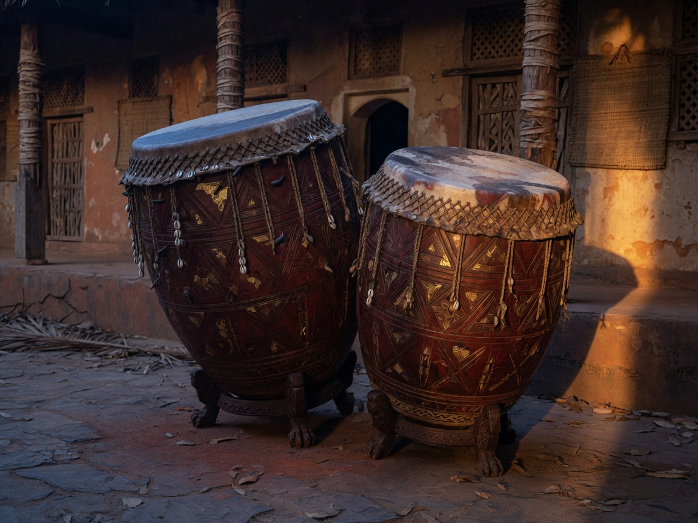
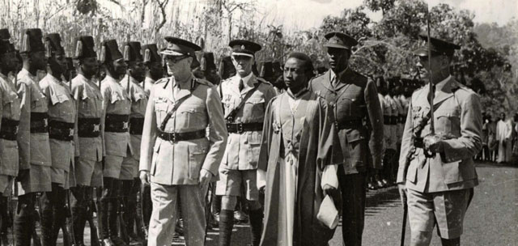
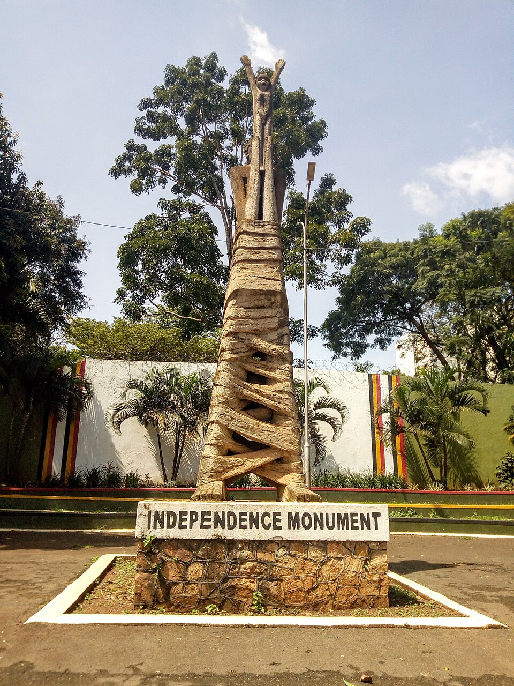
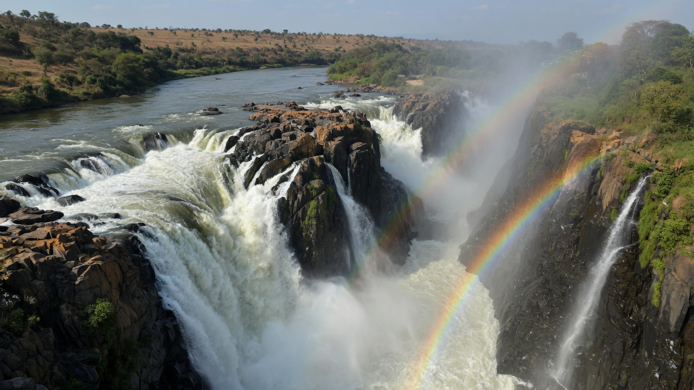
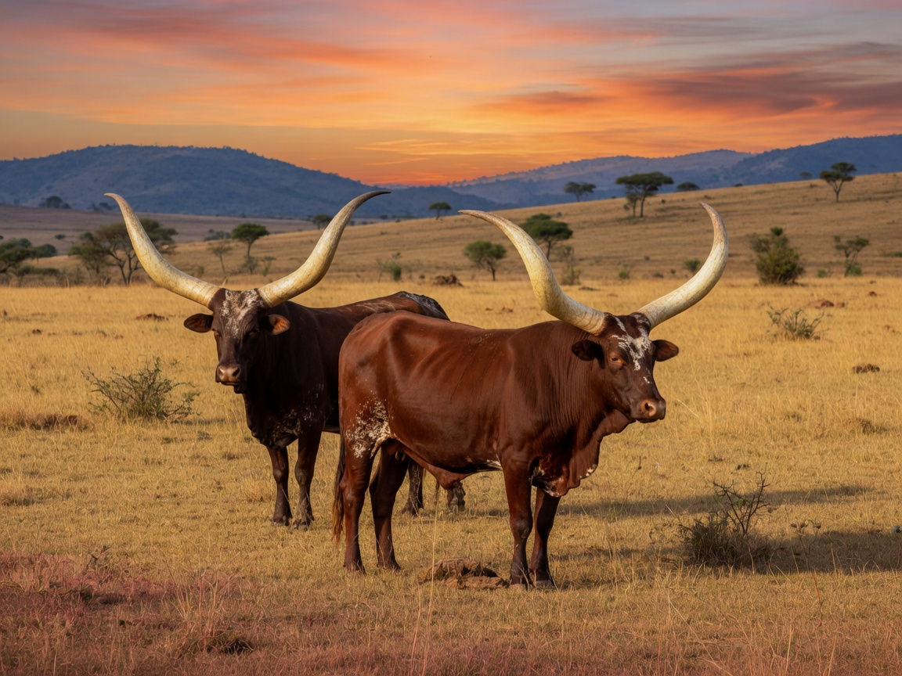

Key moments in Uganda’s journey — independence, institutions and the story of a nation.
Chapters7
Span1k+ yrs
EditionII
Chapter 01 · Pre-1894
01
Pre-colonial kingdoms
Buganda, Bunyoro-Kitara, Tooro, Ankole and Busoga flourished around Nalubaale — the lake the world would call Victoria. North of the Nile, Acholi, Langi and Alur built different polities; the Karimojong kept cattle; the Bakonzo held the Rwenzori.
The drum was the state. Barkcloth, salt from Kibiro and iron moved on paths older than any gazette.
Buganda · 52 clansBabiito dynastyTooro · c. 1830
Chapter 02 · 1894
02
British Protectorate
On 18 June 1894 Uganda was declared a British Protectorate. The Buganda Agreement of 1900 locked mailo land into colonial law. The railway reached the lake in 1901; Makerere opened in 1922.
The Kabaka crisis of 1953–55 — Muteesa II exiled, then returned — taught the country that the throne and the governor would not share a house forever.
18 June 1894Buganda Agreement 1900Makerere 1922
Chapter 03 · 9 Oct 1962
03
Independence
At midnight on 9 October 1962 the Union Jack came down over Kololo. Milton Obote became the first Prime Minister. A year later Sir Edward Muteesa II, Kabaka of Buganda, was the first President of the republic.
The flag — black, gold, red, the crested crane — and Kakoma’s anthem Oh Uganda, Land of Beauty are still the colours and the song.
9 Oct 1962Obote · first PMMuteesa II · 1963
Chapter 04 · 1971 – 1979
04
Idi Amin era
On 25 January 1971 Idi Amin seized the state. In 1972 some 80,000 Asians were given 90 days to leave. The economy hollowed. The Uganda–Tanzania war ended with Kampala falling on 11 April 1979.
This plate is kept without a portrait. The record is the people who endured it.
25 Jan 1971Expulsion 197211 Apr 1979
Chapter 05 · 1986
05
NRM Government
From Luweero the National Resistance Army entered Kampala on 26 January 1986. Yoweri Kaguta Museveni became President. The Ten-Point Programme promised a country not organised by tribe or confession.
The impression of those years, for millions who remember them: the guns went quiet, and children walked to school.
26 Jan 1986Ten-Point ProgrammeReconstruction
Chapter 06 · 1995
06
New Constitution
In 1993 the kingdoms returned as cultural institutions. On 8 October 1995 Uganda promulgated a new Constitution — a bill of rights, a directly elected president, 56 indigenous communities named in the Third Schedule.
Universal Primary Education began in 1997. A 2005 referendum restored multi-party politics.
Kingdoms 19938 Oct 1995UPE 1997
Chapter 07 · Today
07
Vision 2040
The 2024 census counted 45,905,417 people (UBOS). Half are under eighteen. Vision 2040 aims at an upper-middle-income country. The Parish Development Model reaches 10,594 parishes. Karuma, Isimba and Bujagali light the grid.
Bwindi keeps the gorilla. The Rwenzori keeps the snow. Jinja keeps the Nile. The charge of this Centre is to tell that story until the world can say it back.
45,905,41710,594 parishesKaruma 600 MW

Plate 01 / 07 · Engoma — the drum was the state
Plate 02 / 07 · The protectorate, with Kampala marked

Plate 03 / 07 · Muteesa II, 1962 · public domainPlate 04 / 07 · A chapter without a portraitPlate 05 / 07 · The republic on parade

Plate 06 / 07 · A nation reaching upwardPlate 07 / 07 · The crane still stands
Impressions of Uganda
The pearl of Africa
Winston Churchill, travelling Uganda in 1907, wrote that the kingdom was a fairy-tale — “from end to end it is unique.” He called it the pearl of Africa. The Nile still leaves the lake at Jinja. The crane still stands in the papyrus.
The land, in full
What the world first sees
From the source of the Nile to the Mountains of the Moon — impressions the official timeline does not hold. We do.
Bwindi Mountain gorilla. Half the world’s remaining families live in this forest.Rwenzori The Mountains of the Moon. Snow on the equator. Home of the Bakonzo.Crested crane On the flag, the arms and the shilling.

Murchison The Nile forced through a seven-metre gorge.

Ankole Longhorn cattle of the west. The omugabe’s country.Engoma Royal drums of Buganda, Bunyoro, Tooro, Nkore, Busoga.The garden Coffee, tea, matooke, millet.9 October A nation reaching upward. 1962.The parade Black, gold and red.
The flag
Black, gold, red. The grey crowned crane in the centre. Soil, sun, blood of brotherhood.
The arms
Cranes, kob, the Nile, the sun, drum and spears. Motto: For God and My Country.
The anthem
Oh Uganda, Land of Beauty — George Wilberforce Kakoma, 1962.
The people
45,905,417 names in the 2024 census. Fifty-six indigenous communities. Forty-one languages on this desk.